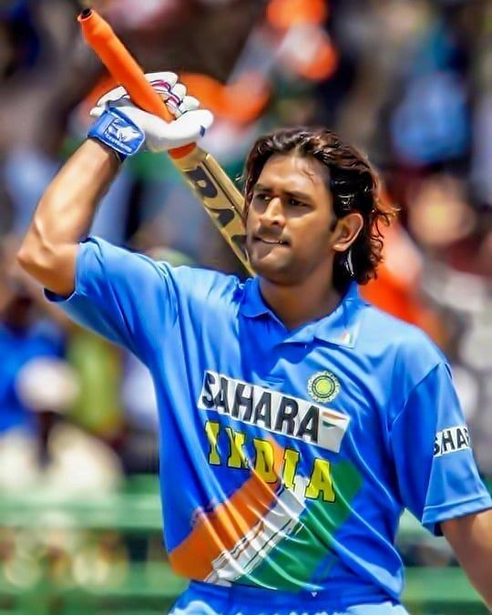

Mahendra Singh Dhoni

July 7, 1981
Mahendra Singh Dhoni (MS Dhoni), one of India's most celebrated cricketers and former captain of the Indian cricket team, is known not only for his achievements on the field but also for his unique lifestyle, which reflects his personality—simple, grounded, and passionate. Here’s a look at key aspects of Dhoni's lifestyle:
1. Love for Simplicity and Humility
Despite his success and fame, Dhoni is known for his humble nature.
He often wears simple attire and maintains a low profile, whether at home or in public.
He is closely connected to his roots and frequently visits his hometown, Ranchi,
where he resides with his family. He often engages with local fans and friends, keeping grounded and connected.
He even
has a dedicated garage in Ranchi to store his motorcycles, which he enjoys riding in his free time.
His love for speed is well-known, and he's often spotted testing his bikes on local roads.
3. Fitness and Discipline
Even after his retirement from international cricket, Dhoni maintains a strict fitness routine.
His workout regimen includes weight training, cardio, and a lot of functional fitness,
which helped him maintain his agility as a wicketkeeper-batsman.
Known for his sharp reflexes and lean physique,
Dhoni focuses on staying fit rather than building muscle mass,
a quality that has helped him in both cricket and his personal pursuits.
4. Interest in Farming and Pets
Dhoni is a passionate animal lover and has several pets, including dogs and horses.
He often shares videos and pictures of himself spending
time with his pets on social media.

MS Dhoni played his first ICC Cricket World Cup match on March 30, 2005
| Match Type |
Opponent |
Date |
Ground Name |
| ODI (One Day International) |
Bangladesh |
March 2, 2005 |
MA Chidambaram Stadium, Chennai |
| ODI |
Kenya |
July 30, 2005 |
Queens Sports Club, Bulawayo |
| ODI |
India |
August 3, 2005 |
Harare Sports Club, Harare |
| ODI |
Zimbabwe |
August 14, 2005 |
Harare Sports Club, Harare |
| ODI |
Zimbabwe |
August 17, 2005 |
Harare Sports Club, Harare |